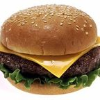
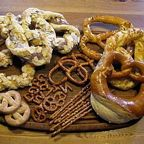
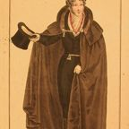
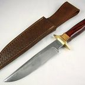
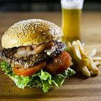
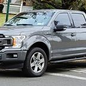
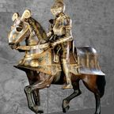
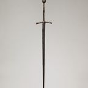

Items
Double Whoppers, a fork, a knife, a cape, a Ford-F150 and a ship built from data centers. · 20 pages
First seen: Chapter 2Captain Gaster's SpyglassUsed once. Resulted in fleeing. First seen: Chapter 2The Fork in the RoadA fork, at a fork in the road. The story knows.First seen: Chapter 1The ForkliftNobody on this page is forklift certified.
First seen: Chapter 2The Fork in the RoadA fork, at a fork in the road. The story knows.First seen: Chapter 1The ForkliftNobody on this page is forklift certified. First seen: Chapter 3The iPhone 3GWill Vella's phone. Plays one YouTube tutorial, twice.First seen: Chapter 3The Mystery MachineStolen from Scooby-Doo and Shaggy for literally no reason.First seen: PrologueThe Shadow CapeStrength and flight. Sewn from literal shadows.
First seen: Chapter 3The iPhone 3GWill Vella's phone. Plays one YouTube tutorial, twice.First seen: Chapter 3The Mystery MachineStolen from Scooby-Doo and Shaggy for literally no reason.First seen: PrologueThe Shadow CapeStrength and flight. Sewn from literal shadows.

First seen: Chapter 1Double Whopper with CheeseThe Kanye System's favorite order. 98.578462849224% of the time.
First seen: Chapter 1Pretzel-Bun BaconatorThat's Wendy's thing.First seen: Chapter 2"Rum & Coke"In quotes, in the story. Gives Gaster the wiggle.First seen: Chapter 2Super Smash Bros. for the Wii UThe game that decided the fate of the world.
First seen: Chapter 3The Bagel Man's CloakWhite, with the Dunkin Donuts logo on the chest.
First seen: Chapter 2The BLACK KNIFECapital letters. Hits for the ship's honor.First seen: Chapter 3The Dunkin Cult CruiserA giant ship built from destroyed data centers.First seen: Chapter 2The Fork in the RoadA fork, at a fork in the road. The story knows.First seen: Chapter 1The ForkliftNobody on this page is forklift certified.
First seen: PrologueThe Great Double Whopper with CheeseA power. Not found in any galaxy. Flows through Vinny, eventually.First seen: Chapter 3The iPhone 3GWill Vella's phone. Plays one YouTube tutorial, twice.First seen: Chapter 3The Mystery MachineStolen from Scooby-Doo and Shaggy for literally no reason.First seen: PrologueThe Shadow CapeStrength and flight. Sewn from literal shadows.
First seen: Chapter 3The UHA Ford-F150Red, white and blue. Plate: FR33D0M. Flies straight up.First seen: Chapter 1Vinny's 5 Below WatchTells him when to clean the freezer.
First seen: PrologueVinny's Titanium ArmorPure titanium. Light as a feather.
First seen: PrologueVinny's Vibrant SwordGlows with a color that doesn't exist.First seen: Chapter 3Wii PlayHas a secret bug in its code. Please buy a copy.First seen: Chapter 3WordleClaude likes it. Aesop and Del failed it. Everyone is in.Nothing matches. Not even a Double Whopper with Cheese.